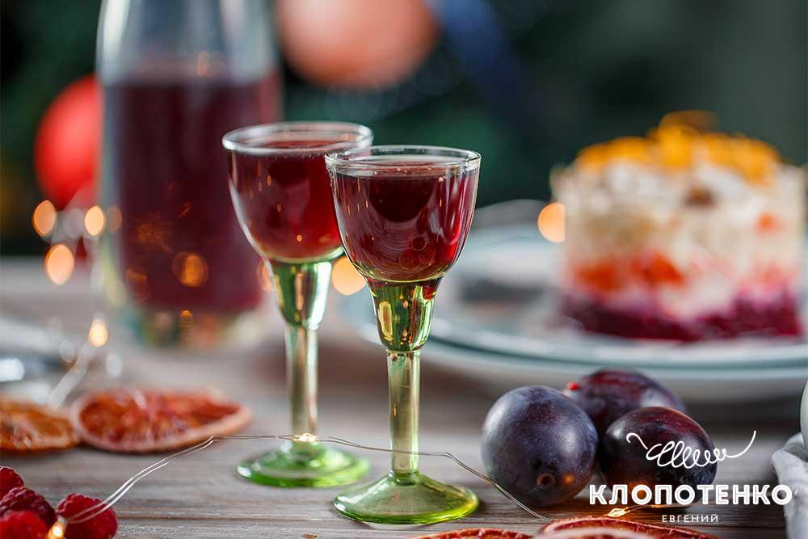
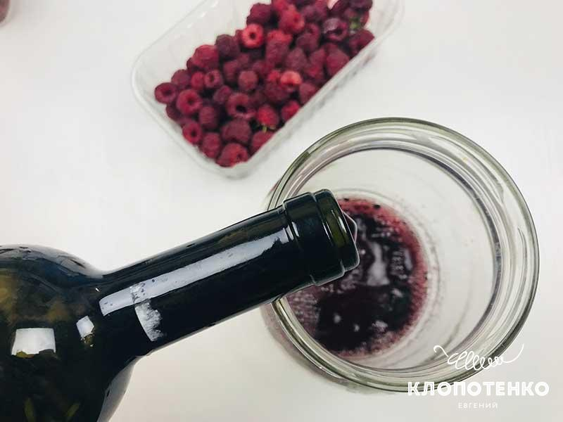
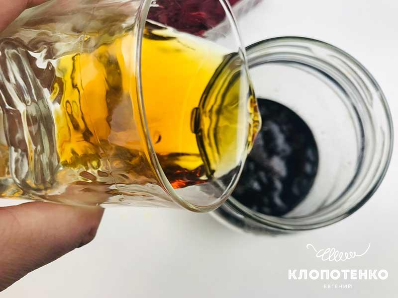
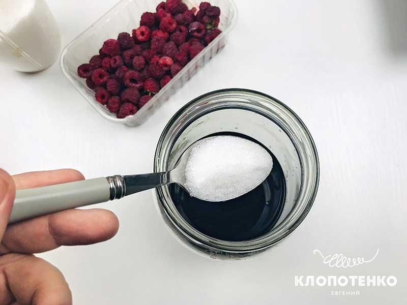
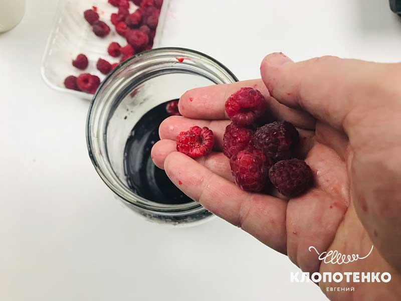
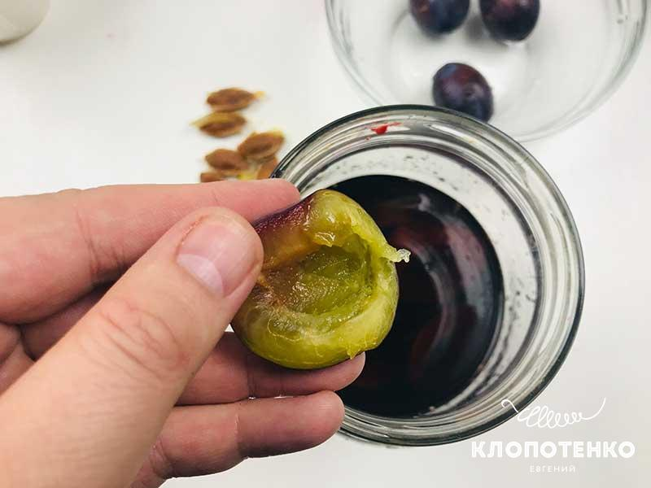
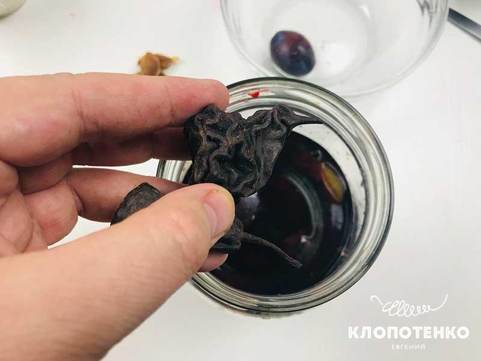
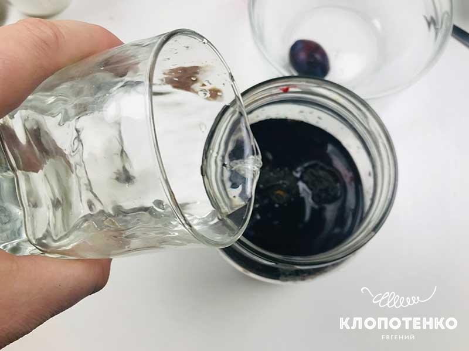

Party Okten
НАПІЙ З КОНЬЯКУ ІЗ ГРУШЕЮ
Настоянки на коньяку – досить популярний напій на застіллях. Я подумав, як зробити смак настоянки більш насиченим і святковим? І вирішив, що в’ялені або копчені груші підійдуть для цього просто ідеально. А доповнять смакову палітру сливи і невелика кількість малини. Навіть звучить вже дуже ароматно і смачно!
CКЛАДОВІ
- 400 мл Коньяк
- 200 мл Сухе червоне вино
- 400 г Слива
- 100 г Малина (можна використовувати заморозку)
- 50 г Груша (копчена/в'ялена)
- 150 г Цукор
- 100 мл Вода
НАПІЙ З КОНЬЯКУ ІЗ ГРУШЕЮ:
ПОКРОКОВИЙ РЕЦЕПТ
-
Налийте у велику скляну ємність 200 мл сухого червоного вина.
 -
У ємність з вином додайте 400 мл коньяку.
 -
До вина і коньяку додайте 150 г цукру. Добре перемішайте.
 -
Додайте 100 г ягід малини. Якщо ви використовуєте заморожені ягоди, попередньо необхідно розморозити їх за кімнатної температури.
 -
400 г слив помийте, розріжте навпіл і звільніть від кісточок. Додайте фрукти в загальну ємність.
 -
50 г копчених або в'ялених груш додайте в загальну ємність. Груші нададуть напою особливого аромату.
 -
Додайте 100 мл води. Закупоріть герметично кришкою і приберіть в холодне темне місце на 3-4 тижні. Протягом цього часу періодично струшуйте вміст ємності."
